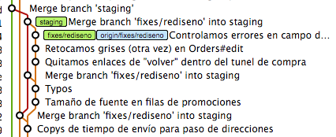
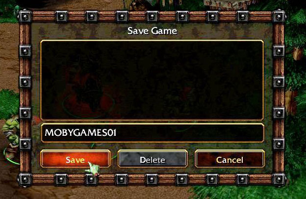

All your rebase
are belong to us
Conquistar un repositorio de git y no morir en el intento
Sistemas de control de versiones
- Qué
- Quien
- Cuando
- Por qué
¿Por qué nos hará felices?
Copias de seguridad automáticas
...lo que también nos permite...
...volver atrás en el tiempo

Varias personas pueden trabajar en lo mismo
Mismos ficheros, mismas funcionalidades
Varias funcionalidades en paralelo
Algunos conceptos
Commit
Commit
- Punto de guardado.
- Qué. Quién. Cuándo. Por qué.
Branch

Branch
- Linea temporal paralela
- Permiten trabajar en varias funcionalidades a la vez.
- Long running: rama de producción, rama de staging...
- Topic: features, fixes...
Merge

Merge

Merge
- Unión de una rama en otra
- Pueden surgir conflictos
Tipos de SCVs
Locales
- Para trabajar con uno mismo
- No permiten varios usuarios
- Ejemplos: RCS
Centralizados
- Un repositorio, N clientes
- Las operaciones se ejecutan en el servidor.
- Ejemplos: CVS, Subversion
Distribuídos


Requisitos de Linus para git
- Rápido
- Escalable
- Distribuído